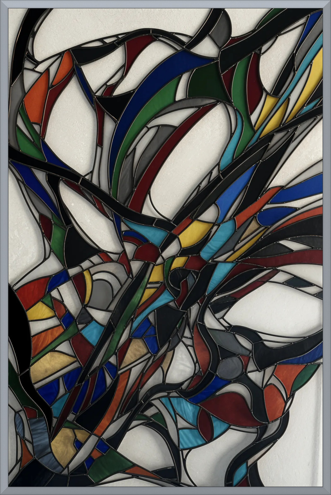
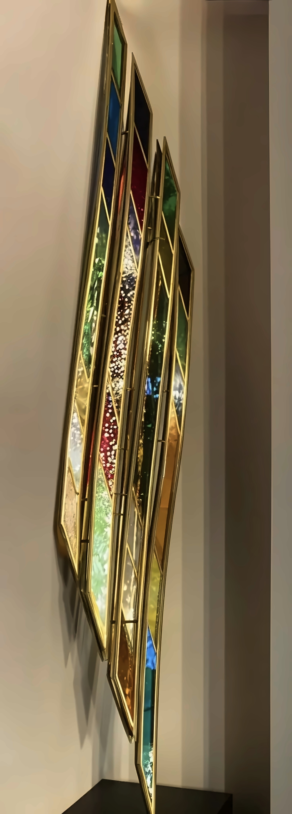
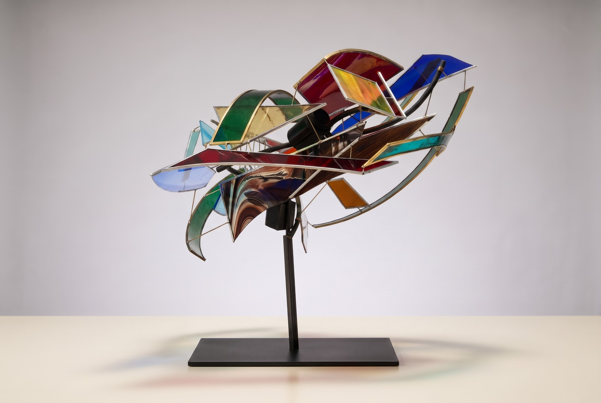
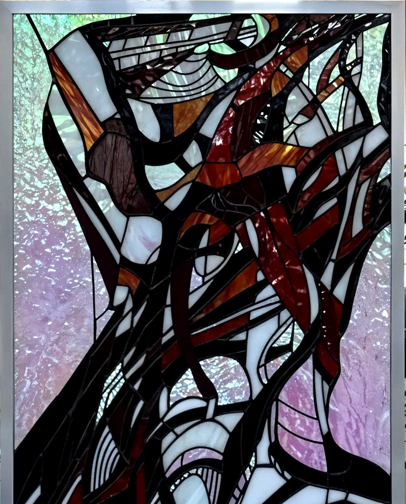
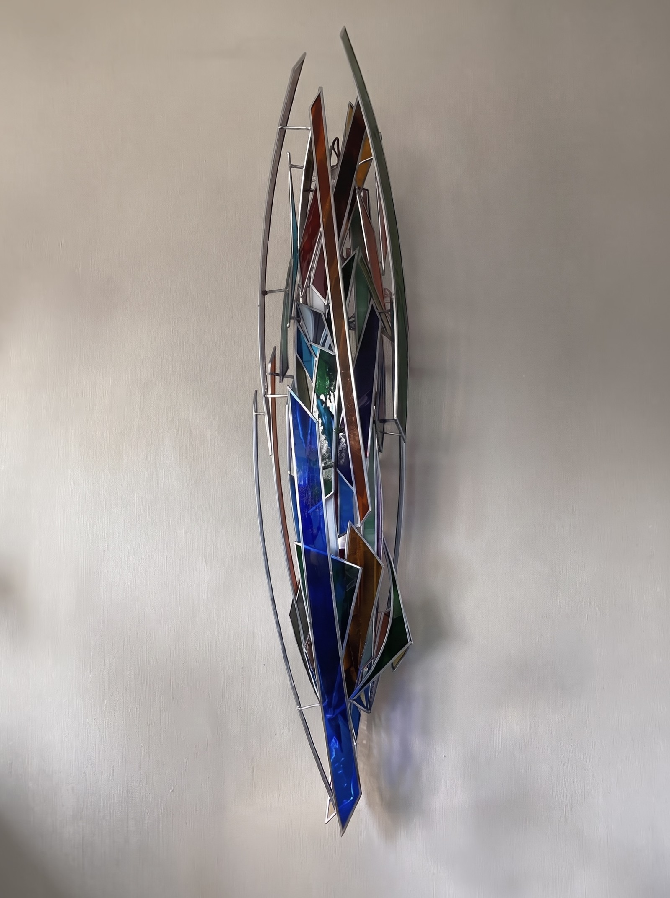

Arthemii Ionaere
About
Works
Projects
Drawings
AI Content
Videos
Gallery
Contact
EN
DE
ES
FR
RU
About
Works
Projects
Drawings
AI Content
Videos
Gallery
Contact
EN
DE
ES
FR
RU
Gallery
Extended collection
Frame Sculpting · 2020
Falling Shadows at Enter the Void
· 2023
Frame Sculpting · 2021
Frame Sculpting · 2018
Kinetic Prizm — installation view
· 2024
Composition of three works
· 2023

Abstract stained glass · 2023
Abstract glass composition
· 2020
Kinetic Prizm No. 2
· 2024

Olymp
· 2020
Glass Kaleidoscope (36 panels)
Glass Parts No. 1
· 2019

Glass Parts No. 3
Kinetic Prizm No. 3
· 2024
Architecture of Light — exhibition view
Experimental sculpture
Kinetic Prizm No. 1
· 2024

Samurai
· 2018
Stained Glass Aquarium
· 2022

Glass Parts No. 2
· 2021
Work in progress
Glass Kaleidoscope (18 panels)
Shadows of eighteen works
· 2023
Enter the Void — winter garden
· 2023
Albert Hofmann
· 2022
Epsilon Y
· 2020
Crypto Whale
· 2020